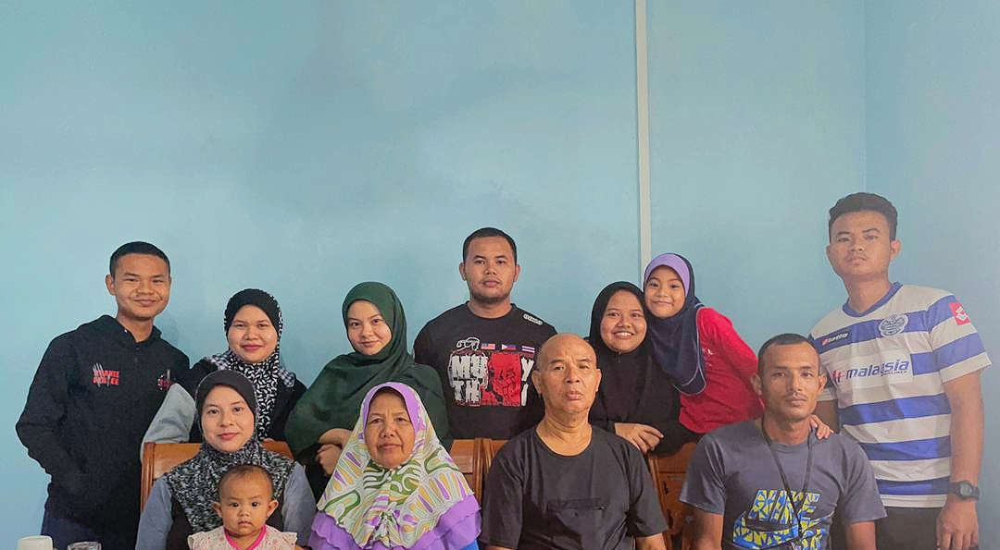
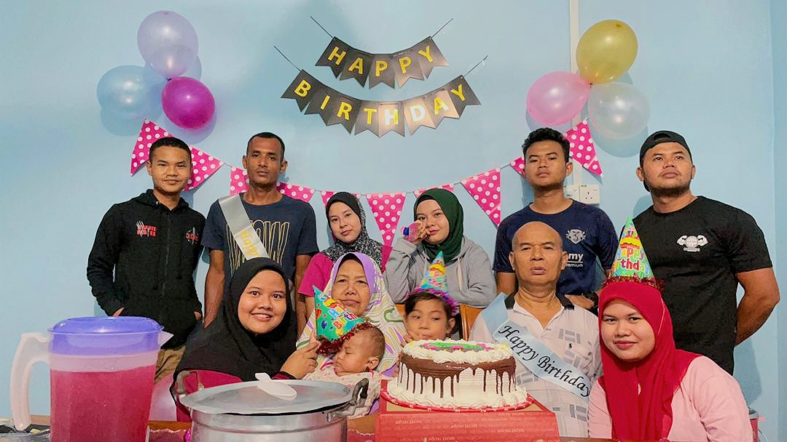
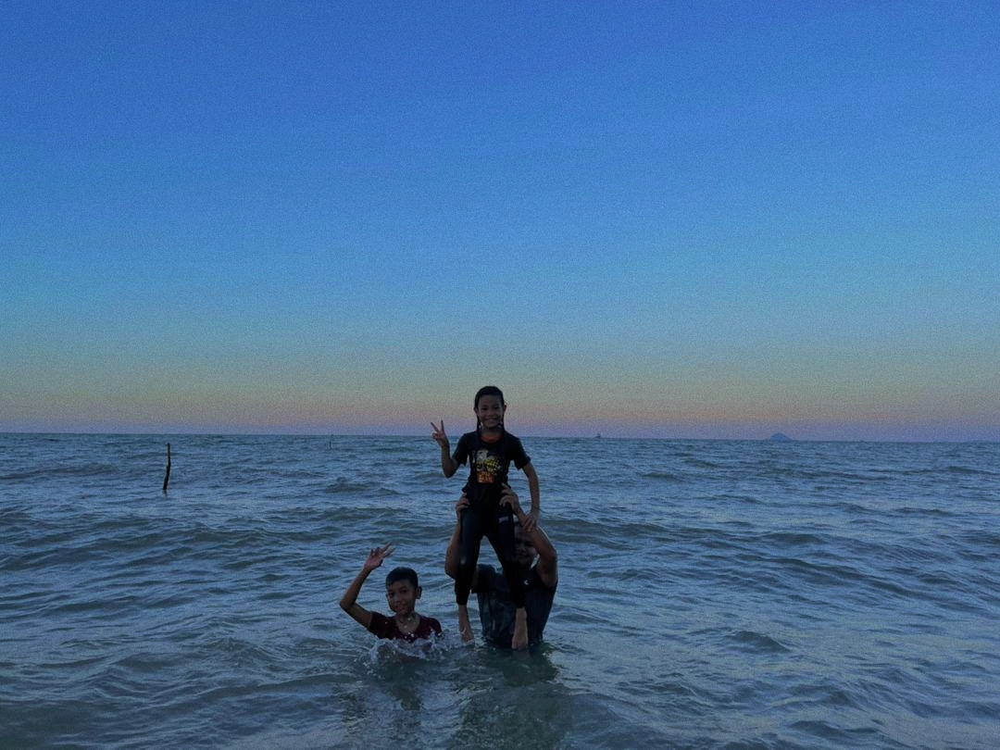

Family Page
HOME
BIODATA
FAMILY
EDUCATION
EXPERIENCE
GALLERY
MOVIE AND SONG
My Family

This is my family. My father's name is Yahaya b Awang and my mother's name is Rosanani bt Mahmood My eldest sister is Yasminiza and her husband is Ismail b Junoh .
Their adorable daughters name Irsalina and Inessa Sofia. My second sister is Yasnor Masayu. My third sister is Yasnadia Izat. My one and only brother is Yasbadrul Haniff and I am Yasarah Atiqah.
My second youngest brother is Yasahafiq Zikri. My youngest brother is Yasamirul Aiman Izzudin
Uniquely our names started with 'YAS' and it is a combination of my parents name.

This photo were taken on 30 March 2021. My parents want to celebrate our birthday all together once my second youngest brother back home after 9 months away. He was at PUSASDA because of undergoing military training.

Our favourite staycation was at beach. This photo were taken on the last trip before Covid19. Usually our family went to beach every month but since Covid19 arise, we have had to stay at home.
My family is my biggest support. They are my weakness and my strenghts. I love them so much. I could not imagine my life without them. They are really important in my life. They know me well than others do.
Like others family we always argue or bicker but only for a short time. We have been through a lot of problems together but what can I say is we manage to overcome all the problems because we always be there for each other.
"FAMILY IS THE LIFE GREATEST BLESSINGS"
HOME